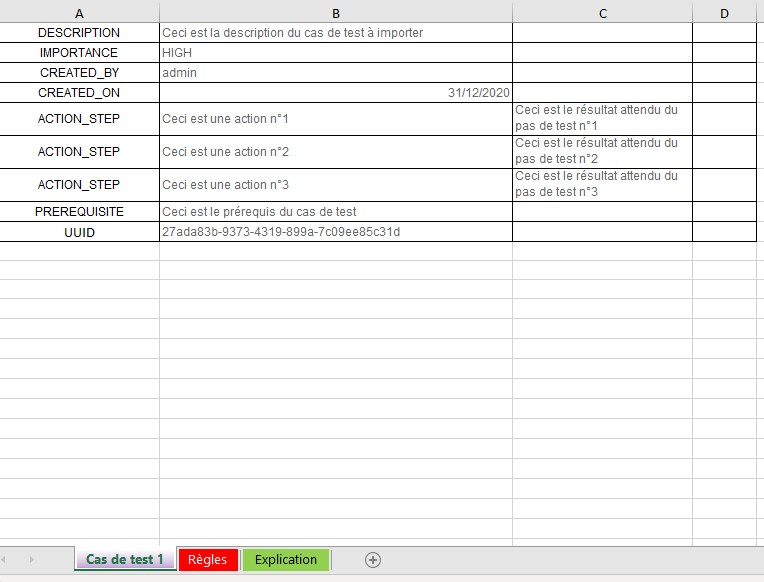
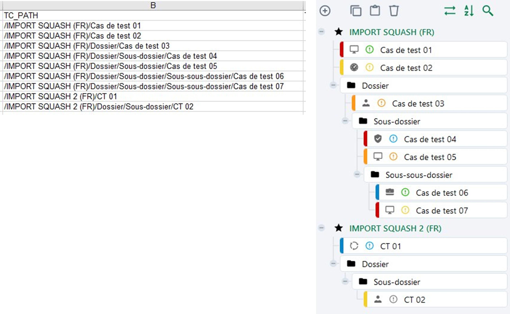
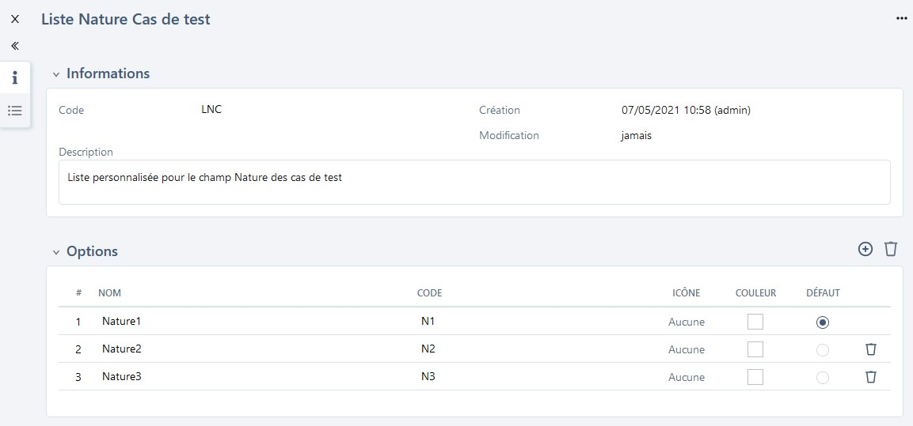
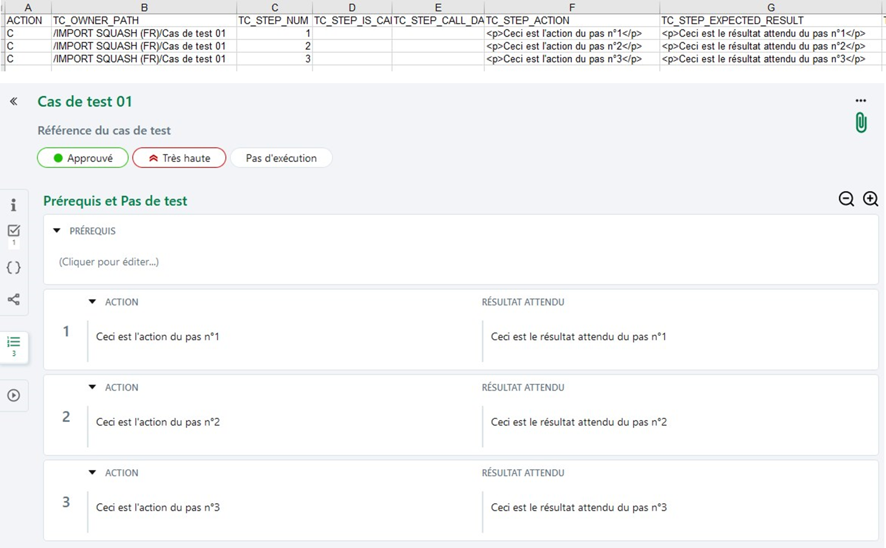
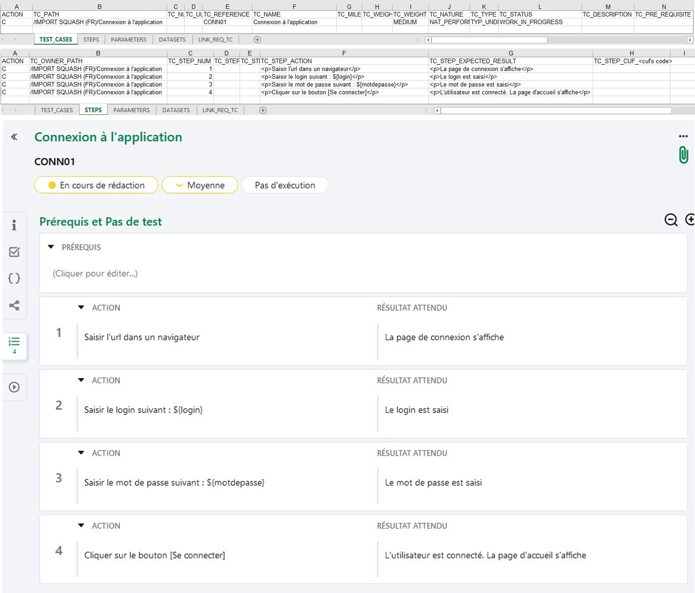
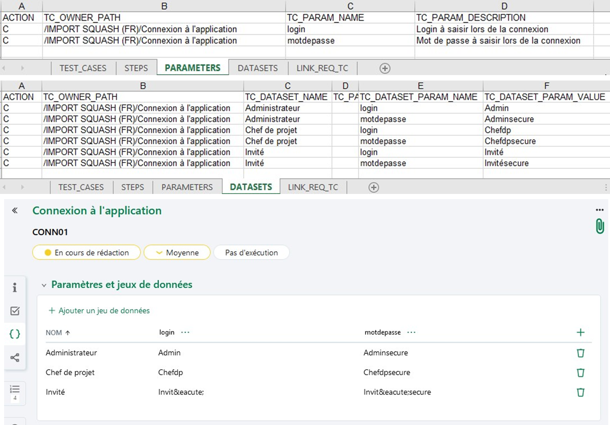
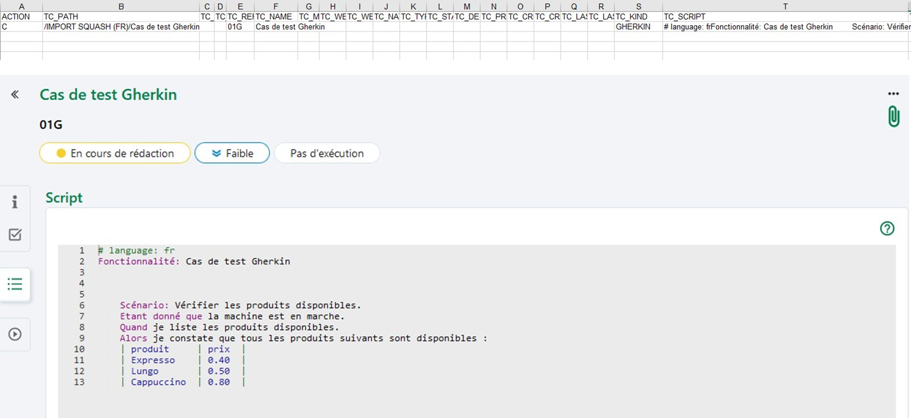

Importer des cas de test
Renseigner un fichier d’import de cas de test
L'import de cas de test via un fichier Excel permet de créer ou modifier un patrimoine de tests en masse. Il est possible d'importer des cas de test, leurs attributs, leurs paramètres et jeux de données ainsi que leur associations à des exigences.
Cette fonctionnalité est très utile :
- lors d'une migration depuis un outil tiers
- pour récupérer un patrimoine de tests existant dans un document
- pour effectuer des modifications en masse sur les cas de test présents dans Squash
L'import de cas de test se fait depuis des fichiers au format .xls, .xlsx, .xlsm ou un dossier Zip.
Info
L'import est réservé aux profils "Administrateur" et "Chef de projet".
Un gabarit d'import pour les formats Excel ou Zip est téléchargeable depuis la popup d'import dans l'espace Cas de test.
Focus
Il n'est pas possible d'importer des cas de test BDD
Il n'est pas possible de modifier le format d'un cas de test (Classique/Gherkin/BDD) via l’import
Structure du fichier d'import au format Excel
Le fichier d'import comprend cinq onglets :
- L'onglet TEST_CASES renseigne les informations liées aux cas de test à importer comme l'emplacement, la description, l'importance, etc.
- L'onglet STEPS renseigne les informations sur les pas de test d'un cas de test classique
- L’onglet PARAMETERS renseigne les informations liées aux paramètres d'un cas de test
- L’onglet DATASETS renseigne les informations liées aux jeux de données
- L'onglet LINK_REQ_TC renseigne les informations pour associer les cas de test aux exigences déjà présentes dans Squash.
Focus
Le fichier d'import doit respecter les règles ci-dessous :
- Les noms des 5 onglets ne doivent pas être modifiés.
- Les entêtes des colonnes ne doivent pas être modifiées.
- Les lignes vides ne sont pas interprétées.
- Les cellules ne doivent pas être fusionnées.
- L'ordre des lignes n'a pas d'importance.
- L'import se fait ligne par ligne.
Onglet TEST_CASES
| Nom de la colonne | Description | Valeur attendue |
|---|---|---|
| ACTION | Valeur qui indique l'action à effectuer. | Champ Obligatoire C : pour la création (Create) U : pour la mise à jour (Update) |
| TC_PATH | Chemin du cas de test. Il commence par "/nom du projet" et se termine par le nom du cas de test. Il inclut le nom du projet car l'import est multi-projet | Champ Obligatoire Par exemple : - /projet/dossier/casdetest |
| TC_NUM | Ordre du cas de test dans son dossier conteneur. - Mode CREATE : si non renseigné, considéré comme le dernier élément du conteneur. Si renseigné, le cas de test est donc créé à cette position. - Mode UPDATE : si non renseigné l'information est ignorée. Si le numéro d'ordre renseigné est différent de l'ordre actuel le cas de test est déplacé à cette nouvelle position. |
|
| TC_UUID | Identifiant universel unique du cas de test. - Mode CREATE : si renseigné, le cas de test est créé avec cet UUID. Si non renseigné, le cas de test est créé avec un UUID généré automatiquement. - Mode UPDATE : la valeur de la colonne TC_UUID n'est pas considérée. Il n'est pas possible de modifier l'UUID d'un cas de test déjà existant dans la base de données. |
Si renseignée, la valeur de la colonne TC_UUID doit correspondre à l'expression régulière : [0-9a-fA-F]{8}-[0-9a-fA-F]{4}-[0-9a-fA-F]{4}-[0-9a-fA-F]{4}-[0-9a-fA-F]{12} |
| TC_REFERENCE | Référence du cas de test | |
| TC_NAME | Nom du cas de test. - Mode CREATE: le champ est ignoré - Mode UPDATE : permet de renommer un cas de test |
|
| TC_MILESTONE | Intitulé du ou des jalons associés au cas de test. Si un objet est associé à plusieurs jalons, chacun des jalons doit être renseigné dans la colonne correspondante séparé par un "|". Mode UPDATE : si la colonne est vide, les associations existantes sont supprimées. |
Par exemple si un cas de test est associé à deux jalons : Jalon1|Jalon 2 |
| TC_WEIGHT_AUTO | Si, à l’import, la valeur est à "1" Squash déduit l’importance du cas de test en fonction des exigences qui lui sont associées y compris celles associées aux cas de test appelés. Si la colonne ou la valeur est omise, la valeur par défaut prise en compte est "0" . |
- "1" : Si le calcul de l’importance est automatique - "0" : Si la valorisation de l’importance est manuelle. |
| TC_WEIGHT | Code de l’importance du cas de test. Si TC_WEIGHT_AUTO = 1, la valeur indiquée pour TC_WEIGHT est ignorée. |
- VERY_HIGH (Très haute) - HIGH (Haute) - MEDIUM (Moyenne) - LOW (Faible) [Valeur par défaut] |
| TC_NATURE | Code de la nature du cas de test | - NAT_ATDD (ATDD) - NAT_BUSINESS_TESTING (Métier) - NAT_FUNCTIONAL_TESTING (Fonctionnelle) - NAT_NON_FUNCTIONAL_TESTING (Non fonctionnelle) - NAT_PERFORMANCE_TESTING (Performance) - NAT_SECURITY_TESTING (Sécurité) - NAT_UNDEFINED (Non définie) [Valeur par défaut] - NAT_USER_TESTING (Utilisateur) |
| TC_TYPE | Code du type de cas de test | - TYP_COMPLIANCE_TESTING (Recevabilité) - TYP_CORRECTION_TESTING (Correctif) - TYP_END_TO_END_TESTING (Bout-en-bout) - TYP_EVOLUTION_TESTING (Évolution) - TYP_PARTNER_TESTING (Partenaire) - TYP_REGRESSION_TESTING (Non-régression) - TYP_UNDEFINED (Non définie) [Valeur par défaut] |
| TC_STATUS | Code du statut de rédaction du cas de test | - APPROVED (Approuvé) - OBSOLETE (Obsolète) - TO_BE_UPDATED (À mettre à jour) - UNDER_REVIEW (À approuver) - WORK_IN_PROGRESS (En cours de rédaction) [Valeur par défaut] |
| TC_DESCRIPTION | Description du cas de test | |
| TC_PRE_REQUISITE | Prérequis du cas de test | |
| TC_CREATED_ON | Date de création du cas de test. Les dates sont exportées dans des cellules de type date ou de type texte au format ISO 8601 | Format : YYYY-MM-DD Si elle n’est pas renseignée, la date courante est utilisée. |
| TC_CREATED_BY | Login du créateur. | Si non renseigné, c'est le login de l’utilisateur réalisant l'import qui est utilisé. |
| TC_LAST_MODIFIED_ON | Date de dernière modification du cas de test | Colonne ignorée si présente dans le fichier d’import |
| TC_LAST_MODIFIED_BY | Login du dernier modificateur. | Colonne ignorée si présente dans le fichier d’import |
| TC_KIND | Code du format du cas de test. Si non renseigné, le cas de test est importé comme un cas de test classique. |
Format : - STANDARD (Classique) - GHERKIN - KEYWORD (BDD) |
| TC_SCRIPT | Script Gherkin du cas de test | |
| TC_AUTOMATABLE | Eligibilité à l’automatisation du cas de test | - M : À instruire [Valeur par défaut] - Y : Eligible - N : Non éligible |
| TC_CUF_<cuf's code> | Une colonne par champ personnalisé. Dans l'en-tête, remplacer <cuf's code> par le code du champ personnalisé. |
Valeur associée au champ personnalisé |
Onglet STEPS
| Nom de la colonne | Description | Valeur attendue |
|---|---|---|
| ACTION | Valeur qui indique l'action à effectuer. | Champ Obligatoire C : pour la création (Create) U : pour la mise à jour (Update) |
| TC_OWNER_PATH | Chemin vers le cas de test propriétaire du pas de test. | Champ obligatoire Par exemple : - /projet/dossier/casdetest |
| TC_STEP_NUM | Numéro d’ordre de l’étape de test (commence à 1) Pour l’import, les numéros peuvent ne pas se suivre : on prend l’ordre relatif entre les différents TC_STEP_NUM. L'ordre d'apparition dans le fichier est pris en compte si deux pas de test ont le même numéro d’ordre, ou si la valeur est absente |
|
| TC_STEP_IS_CALL_STEP | Permet d'indiquer que ce pas de test est soit une action soit un cas de test appelé | - "0" si l’étape est un pas de test [Valeur par défaut] - "1" si l’étape est un cas de test appelé |
| TC_STEP_CALL_DATASET | La colonne n’est prise en compte que si TC_STEP_IS_CALL_STEP = "1" | - "INHERIT" si l’option choisie est de ne pas choisir de jeu de données, le cas de test appelant hérite des paramètres du cas de test appelé - <NAME> : donne le nom du jeu de données choisi. |
| TC_STEP_ACTION | - Action de l’étape - Ou chemin vers le cas de test appelé |
Par exemple, dans le cas d’un appel de cas de test : CALL /projet/dossier/nom_du_CT_appelé |
| TC_STEP_EXPECTED_RESULT | - Résultat attendu de l’étape - Si STEP_IS_CALL_STEP = 1, cette colonne est ignorée |
|
| TC_STEP_CUF <cuf's code> | Une colonne par champ personnalisé. Dans l'en-tête, remplacer <cuf's code> par le code du champ personnalisé du pas de test. | Valeur associée au champ personnalisé |
Onglet PARAMETERS
| Nom de la colonne | Description | Valeur attendue |
|---|---|---|
| ACTION | Valeur qui indique l'action à effectuer. | Champ Obligatoire C : pour la création (Create) U : pour la mise à jour (Update) |
| TC_OWNER_PATH | Chemin vers le cas de test propriétaire du paramètre | Champ obligatoire Par exemple : - /projet/dossier/casdetest |
| TC_PARAM_NAME | Nom du paramètre, doit contenir uniquement les caractères suivants : [0-9], [a-z], [A-Z] et [-,_]. | Champ obligatoire |
| TC_PARAM_DESCRIPTION | Description du paramètre |
Onglet DATASETS
| Nom de la colonne | Description | Valeur attendue |
|---|---|---|
| ACTION | Valeur qui indique l'action à effectuer. | Champ Obligatoire C : pour la création (Create) U : pour la mise à jour (Update) |
| TC_OWNER_PATH | Chemin vers le cas de test propriétaire du jeu de données. | Champ obligatoire Par exemple : - /projet/dossier/casdetest |
| TC_DATASET_NAME | Nom du jeu de données. | Champ obligatoire |
| TC_PARAM_OWNER_PATH | Chemin vers le cas de test propriétaire du paramètre. Cette colonne est nécessaire dans le cas de paramètres venant de cas de test appelés par le cas de test propriétaire du jeu de données. | |
| TC_DATASET_PARAM_NAME | Nom du paramètre pour lequel la valeur sera renseignée. Il doit contenir uniquement les caractères suivants : [0-9], [a-z], [A-Z] et [-,_]. A l’import, si aucun paramètre ne correspond, la valeur est ignorée. | Champ obligatoire |
| TC_DATASET_PARAM_VALUE | Valeur correspondante pour le couple {jeux de données | paramètre} spécifié. |
Onglet LINK_REQ_TC
Pour faire des associations entre les cas de test et des exigences présentes dans le référentiel, les 3 champs sont obligatoires.
| Nom de la colonne | Description | Valeur attendue |
|---|---|---|
| REQ_PATH | Chemin de l'exigence depuis le nom du projet jusqu'au nom de l'exigence (version courante) NB : le nom de la version courante peut différer de celui de la version à lier | Par exemple : - /projet/dossier/exigence - /projet/exiMère/exiFille |
| REQ_VERSION_NUM | Numéro de la version d'exigence à lier | |
| TC_PATH | Chemin du cas de test depuis le nom du projet jusqu'au nom du cas de test | Par exemple : /projet/dossier/casdetest |
Info
Avec un import Excel, il est possible de mettre en forme tous les champs de type texte riche comme la description ou encore les pas de test en utilisant des balises HTML.
Structure du fichier d'import au format Zip
Le fichier zip contient les dossiers, les sous dossiers ainsi que l'ensemble des cas de test à importer.
Pour chaque cas de test à importer, il faut créer un fichier Excel. Chaque fichier doit contenir un onglet avec les informations du cas de test. Le nom de l’onglet doit correspondre au nom du cas de test à importer.
Ces fichiers doivent être placés dans leurs dossiers respectifs afin que les cas de test soient importés au bon emplacement dans la bibliothèque de l'Espace Cas de test.
Par exemple:
- Pour importer 10 cas de test, il faut 10 fichiers Excel.
- Pour importer un cas de test dans un dossier intitulé "Dossier1" : il faut créer un dossier intitulé "Dossier1", y placer le fichier Excel qui contient les informations du cas de test à importer avant de le zipper pour import.
Focus
L’import par .zip ne permet pas d’importer des cas de test Gherkin et BDD
L'import par .zip se fait sur un seul projet à la fois
Seule la création de nouveaux cas de test est possible via un import par .zip
L'import par .zip ne permet pas d'importer les paramètres, les jeux de données et les associations d'un cas de test.
L'onglet du fichier Excel d'un cas de test doit contenir les balises suivantes dans ordre indiqué ci-dessous :
| Balise | Première valeur | Deuxième valeur | Commentaire |
|---|---|---|---|
| Description | Indiquer la description du cas de test. | Cette donnée alimentera le champ "Description" du cas de test | |
| Importance | Indiquer l'importance du cas de test en choisissant l'une des valeurs normées suivantes : - VERY_HIGH (Très haute) - HIGH (Haute) - MEDIUM (Moyenne) - LOW (Faible). |
Cette donnée alimentera le champ "Importance" du cas de test | |
| Created_by | Indiquer le login du créateur. | Cette donnée alimentera le champ "Créé par" du cas de test | |
| Created_on | Possibilité d'inscrire la date soit au format de cellule date (heure incluse) ou texte dans ce dernier cas, indiquer la date de création au format JJ/MM/AAAA. | Cette donnée alimentera le champ "Créé par xxx le …" du cas de test | |
| Action_step | Indiquer l'action à réaliser. | Indiquer le résultat attendu. | Cette balise entraîne la création d'un nouveau pas de test à chaque fois qu'elle est rencontrée. Les pas de test sont créés dans l'ordre du fichier (de haut en bas). |
| Prerequisite | Indique les informations à ajouter dans les "Prérequis" du cas de test. | Si plusieurs lignes du fichier Excel sont renseignées avec cette balise, les différentes valeurs seront concaténées dans le champ "Prérequis". |
Par exemple:
Les informations du cas de test sont contenus dans le premier onglet. Le nom donné à cet onglet sera le nom du cas de test "Cas de test 1"

Cas pratiques d'imports de cas de test
Squash permet d’importer une arborescence de cas de test depuis un fichier au format .xls ou .zip
Pour réaliser cet import, il faut renseigner un fichier Excel en respectant les recommandations faites dans Structure du fichier d'import au format Excel puis l'importer via l'option [Importer] de l'espace Cas de test. Il est possible de simuler l'import pour vérifier la cohérence du fichier d'import avant de l'importer.
En savoir plus
Pour plus de détails sur la procédure à suivre pour réaliser un import, consulter la page Importer un objet.
L'import permet de créer des cas de test avec toutes les fonctionnalités disponibles dans l'espace Cas de test:
Créer une arborescence de cas de test
L'arborescence est très importante car elle permet d'organiser le référentiel de tests. L'import offre la possibilité de créer une arborescence précise des dossiers et cas de test à importer et ce dans plusieurs projets à la fois.

Si les dossiers sont inexistants dans Squash au moment de l'import, ceux-ci sont créés par l'import.
Par exemple :
Pour le chemin: /Projet1/Dossier1/Sousdossier1/Casdetest1
Le cas de test Casdetest1 est ajouté dans le projet Projet1, dans le dossier Sousdossier1, sous-dossier de Dossier1.
Importer des cas de test avec une liste personnalisée
Si une liste personnalisée est configurée pour la nature et/ou le type des cas de test sur le projet, dans le fichier d'import, le code de l'option souhaitée est à renseigner dans la colonne "TC_NATURE" et/ou "TC_TYPE"
Par exemple :
- Avoir une liste personnalisée avec plusieurs options, dont une des options est "Nature2" associée au code "N2".

-
Dans le fichier Excel, renseigner la valeur du code de l'option dans la colonne "TC_NATURE" : ici "N2"
-
Lorsque le fichier est importé, le cas de test est créée et le champ 'Nature' est renseigné par "Nature2"
Importer des cas de test avec des champs personnalisés
Si des champs personnalisés (CUF) sont configurés pour les cas de test du projet, dans le fichier d'import, la colonne "TC_CUF_<code du cuf>" peut être renseignée, à raison d'une colonne par champ personnalisé. L'entête de la colonne doit comporter le code du champ personnalisé présent sur sa page de consultation.
Contenu de la colonne "TC_CUF_<code du cuf>" :
| Type de champ personnalisé | Valeur attendue |
|---|---|
| Tag | Tag1|Tag2 |
| Case à cocher | 'true' ou 'false' |
| Liste déroulante | Libellé de l'option |
| Numérique | Par exemple : '50', '12,8' |
| Date | 'AAAA-MM-JJ' |
| Texte simple | Texte avec 255 caractères maximum sans mise en forme |
| Texte riche | Pour importer de la mise en forme, le texte doit être en HTML |
Importer des cas de test avec des associations à des exigences
L'onglet "LINK_REQ_TC" du fichier d'import est à compléter avec le chemin de l'exigence, le numéro de la version ainsi que le chemin du cas de test à associer. Pour que l'association fonctionne, l'exigence doit au préalable exister dans le référentiel.
Les informations sont visibles après l'import dans l'ancre Exigences vérifiées par ce cas de test du cas de test.
Importer des pas de test
L'onglet "STEPS" permet d'importer des pas de test pour un cas de test Classique. Le numéro du pas, l'action et le résultat attendu sont renseignés dans le fichier.

Importer avec des paramètres et des jeux de données
Les onglets "PARAMETERS" et "DATASETS" permettent d'importer des paramètres et des jeux de données pour un cas de test. Il est également possible d'ajouter le paramètre directement dans le pas de test, via l'onglet "STEPS".
Par exemple :
Pour un cas de test de connexion à une application, il est possible d'importer les 2 paramètres "Login" et "Motdepasse", ainsi que les 3 jeux de données, correspondant à la connexion de 3 profils différents : "Admin", "Chef de projet et "Invité".


En savoir plus
Pour en savoir plus sur le fonctionnement des paramètres et jeux de données, consulter la page Variabiliser un cas de test classique
Importer un cas de test faisant appel à un autre cas de test
Renseigner le cas de test appelant dans l'onglet "TEST_CASES", puis dans l'onglet "STEPS" renseigner les colonnes suivantes :
- La colonne "TC_STEP_IS_CALL_STEP" est à valoriser par le chiffre "1" pour indiquer que ce pas de test est un appel de cas de test.
- La colonne "TC_STEP_ACTION" est à valoriser avec les informations suivantes "CALL <chemin du cas de test appelé>. (Par exemple : CALL /projet/dossier/ct-appelé)
- La colonne "TC_STEP_EXPECTED_RESULT" n'est pas à renseigner.
Info
Si le cas de test appelé n'est pas présent dans le référentiel de test, il doit être présent dans l'onglet "TEST_CASES" dans le fichier d'import .
En savoir plus
Pour en savoir plus sur le fonctionnement d'appel de cas de test, consulter la page Modulariser : Appeler un cas de test tiers.
Importer un cas de test Gherkin avec un script
Pour importer un cas de test Gherkin avec son script, des colonnes spécifiques au format Gherkin sont à renseigner, dans l'onglet "TEST_CASES":
- Colonne "TC_KING" : GHERKIN
- Colonne "TC_SCRIPTING_LANGUAGE" : Le script gherkin du cas de test

Focus
Il n'est pas possible d'importer des cas de test BDD